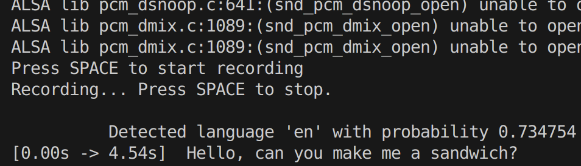
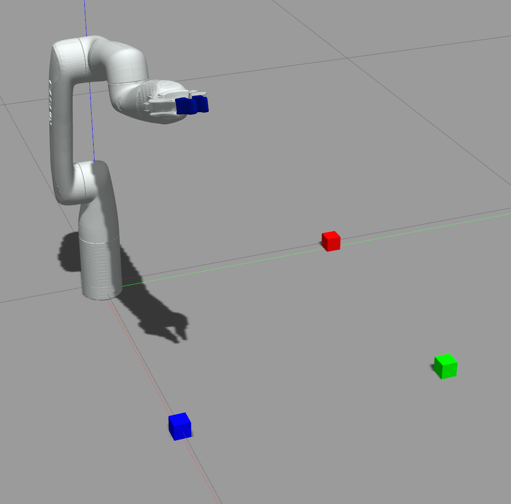
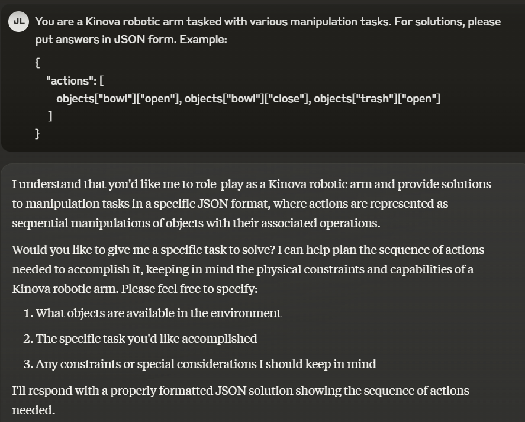
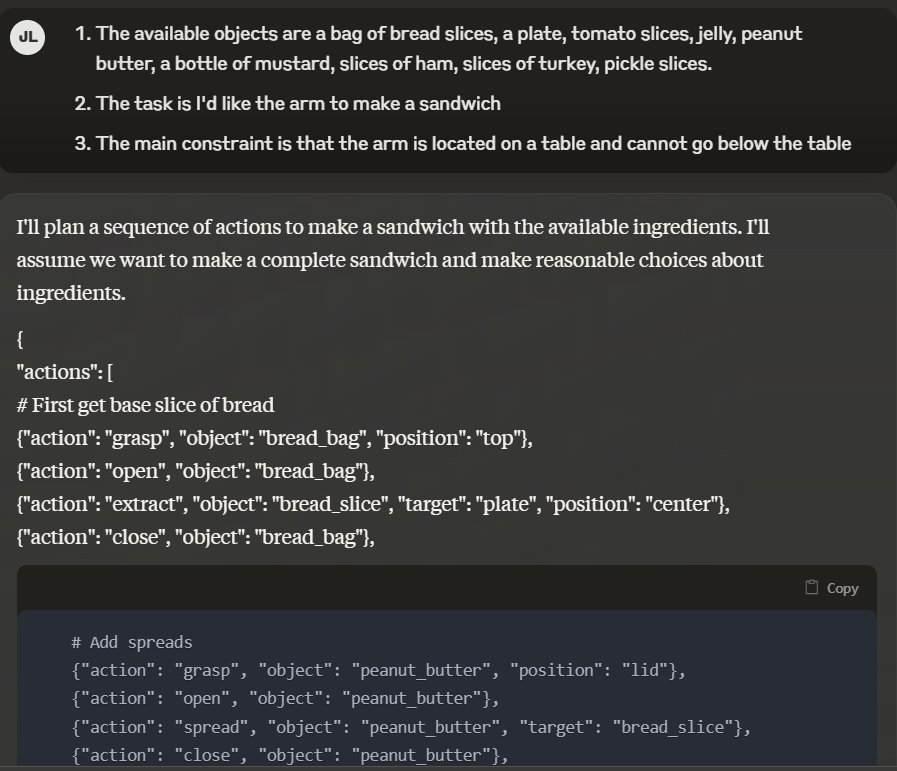
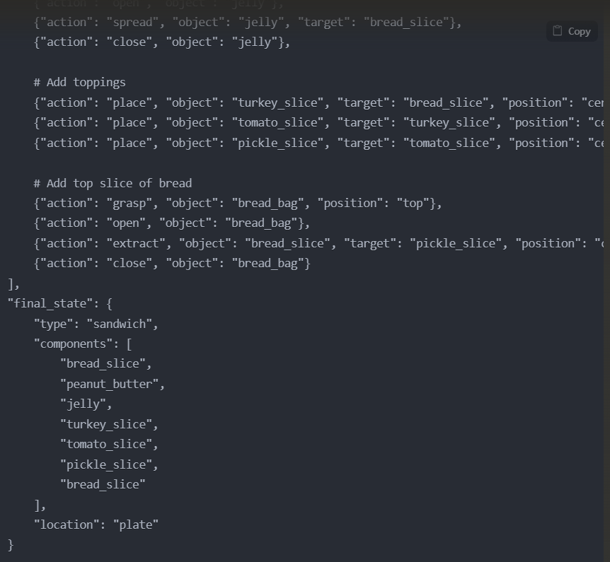

Despite advancements in robotic capabilities, interaction with robotic manipulators remains constrained by the need for intricate programming and a lack of intuitive, non-manual control interfaces. Hence, we presents a framework for intuitive teleoperation of robotic manipulators through natural language commands, enabled by advancements in large language models (LLMs). We integrate an LLM-based action planner with a trajectory planner to interpret human speech and generate executable, sequential action plans for a simulated Kinova robotic arm. By evaluating eight LLMs with two prompting strategies on multiple tasks from the RLBench benchmark, we demonstrate the feasibility of translating natural language instructions into coherent, low-level manipulator actions without intricate manual programming. The system’s performance in a Gazebo-based simulation environment provides evidence that LLM-driven action sequencing can serve as a viable, accessible, and scalable approach to human-robot interaction, potentially broadening the utility of robotic assistance in complex, real-world scenarios.
Pipeline Figure
This whole pipeline of our proposed framework.
Some demo video for the framework completing tasks from RLBench benchmark
Picking:
Building a pyramid:
Place:
Stacking:
Introduction / Background / Motivation
What did you try to do? What problem did you try to solve? Articulate your objectives using absolutely no jargon.
We propose a framework that integrates an LLM with a traditional trajectory planner to enable operators to command a robotic manipulator using natural human speech.
How is it done today, and what are the limits of current practice?
LLMs are being used to actuate robotic arms, but they are often limited by the complexity of the task and have limited analysis of how model parameter size and different prompting techniques affect the performance of this kind of pipeline.
Who cares? If you are successful, what difference will it make?
This work might contribute to the integration of the Human-Robot Interaction (HRI) field. We provide a potentially workable solution allowing non-expert operators to intuitively control the manipulator. This framework can be deployed on common workspace for humans and manipulators, so people from different backgrounds can all command the manipulator to do some tasks automatically to improve efficiency.
Approach
What did you do exactly? How did you solve the problem? Why did you think it would be successful? Is anything new in your approach?
We developed a framework where a large language model (LLM) transforms spoken English instructions—transcribed by Faster Whisper—into sequences of predefined robotic actions. Instead of having the LLM generate code or trajectories directly, we restrict it to choosing from modular commands like “pick_up,” “go_to,” and “drop_to.” These high-level actions are then executed by a Kinova Gen3 arm in a Gazebo simulation, guided by established motion planning tools like MoveIt. This setup allows the LLM to focus on natural language comprehension and logical planning while the proven robotic trajectory commander like MoveIt handles the complexity of execution. The approach is relatively new in that it integrates LLM-driven reasoning with fixed, reliable action “building blocks” and continuously updated environmental information via ROS, ultimately making the system more robust, flexible, and practical for real-world applications.
What problems did you anticipate? What problems did you encounter? Did the very first thing you tried work?
In the initial idea of this framework, we want to integrate the LLMs and Variational autoencoder (VAE) to directly generate trajectories for the manipulator to execute. However, we found out it is time-consuming to collect data to train the VAE, and the LLMs are not reliable when they are asked to generate continuous trajectories, and it is hard to let the model understand all the spatial information. Hence, we decided to run the current approach at a very early stage since this problem is predictable. The other problem we encountered was we initially wanted to make the responses from the LLMs in JSON form in order to unify the output format. However, it actually makes it hard to write a Python script to read the output, so we decided to make the response in Python list format.
Results
Initial qualitative results of action scheme
For a basic assessment of LLMs with the JSON action scheme, we used Claude AI to generate a JSON where it was taked to make a sandwich as a robot arm.
While the Claude AI came up with a logical action sequence, its final sandwich contained ingredients that aren't commonly used together.





Conclusion and Future Work
Reproducibility
To reproduce our results, we've posted our code to our GitHub repository (see code link above)
Dataset
Using the RLBench dataset with LLMs opens the door to research into testing robotic systems on tasks with greater complexity.
Future research could delve into designing more complex tasks and integrating them with the RLBench framework and LLMs.
Ethical Concerns
Integrating human speech and LLMs into robot commands introduces the possibility for harmful errors, biases, and potentially malicious actions.
One potential way to mitigate these concerns is with improved error-handling and developing policy-based filters.
Limitations
There appeared to be a limit to the amount of environment information that could be placed into the system prompt without
causing the smaller LLMs to use object locations from the wrong task. Further research could study the limitations of
system prompts, which may be a function of model parameter size, for robot tasks.